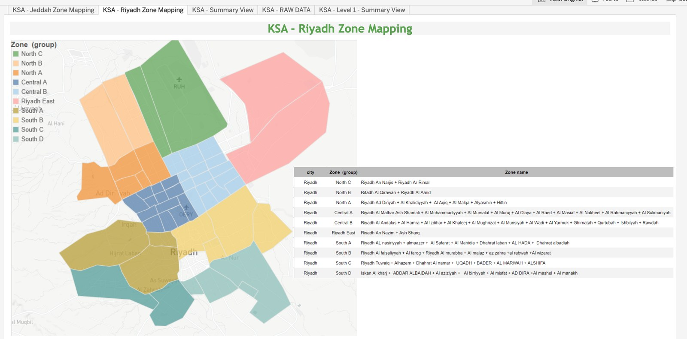

Geospatial Intelligence
Territory decisions, made visible: polygon zone maps for Jeddah and Riyadh built from real district-composition files, metric-selectable heatmap coloring, and 3-level hierarchical zone performance tables.
Note on numbers: no figure from inside a client dashboard is presented here as an achievement. Published screenshots have absolute figures blurred.
01The Business Problem
City-level averages hide everything territory managers need: which districts perform, where coverage gaps sit, which zones deserve investment. Zone-level performance was effectively invisible — decisions about physical territory were being made from spreadsheets with no map behind them.
02My Role
Sole analyst on the product: building the polygon zone maps from district composition files, wiring the metric-selectable coloring, and designing the hierarchical zone tables that sit beside the maps.
03What I Built
KSA Discovery Zone Mapping
Interactive polygon maps of Jeddah and Riyadh, each district grouped into named zones (Central A, North B, Airport…) with real geographic boundaries — and a companion table documenting exactly which districts compose each zone group, inside the dashboard.
Zone Analysis — performance heatmaps
City maps colored by a selectable metric — pick booked orders, delivery fee, or AOV and the whole map recolors on a red-to-green gradient — beside a 3-level hierarchical table: zone group → district → totals.
Zone Performance Tables
Per-zone metrics side by side: live and active outlets, booked and delivered orders, express share, average delivery fee, AOV — with grand totals per city and per zone group.
Zone Contribution Views
Booking contribution and C/R tracked daily per named zone — down to individual malls and airport terminals — with directional coloring for trend reading.
04Signature Build Details
05KPIs Defined & Governed
06Decisions Enabled
Jeddah polygon zone map + composition table
(blur all absolute figures)assets/geo-jeddah-zones.png
